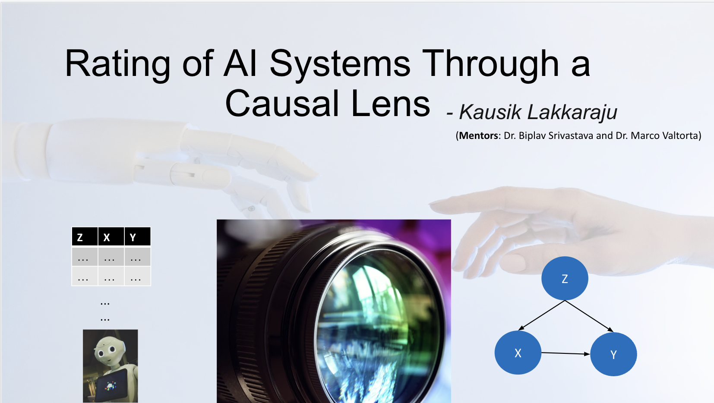

About Me
Education:
Ph.D. - Computer Science and Engineering
2021 - Present
AI Institute, University of South Carolina, Columbia, SC (USA)
3.82 CGPA
MS - Computer Science and Engineering
2019 - 2021
Univeristy of South Carolina, Columbia, SC (USA)
3.87 CGPA
B.E. - Electronics and Communication Engineering
2015 - 2019
Osmania University, Hyderabad, Telangana (India)
Research Interests:
Multimodal decision-support, Causal reasoning, AI fairness, eXplainable AI (XAI)
Publications: Google Scholar
Publications

Rating Sentiment Analysis Systems for Bias Through a Causal Lens
Summary:
TBD
Category: Journal (IEEE Transactions on Technology and Society 2024)
Paper
|Bibtex
Trust and ethical considerations in a multi-modal, explainable AI-driven chatbot tutoring system: The case of collaboratively solving Rubik's Cube
Summary:
TODO
Category: Workshop (ICML Workshop on What’s left to TEACH (Trustworthy, Enhanced, Adaptable, Capable and Human-centric) chatbots?)
Paper
|Bibtex
Advances in Automatically Rating the Trustworthiness of Text Processing Services
Summary:
In this symposium paper, we talked about the previous approaches that were used to rate the trustworthiness of AI systems and we also
outlined the challenges and vision for a principled, causality-based, and multi-modal rating methodologies.
Category: Journal (AI and Ethics 2023); Symposium (AAAI Spring Symposium 2023)
Paper
|Bibtex
The Effect of Human v/s Synthetic Test Data and Round-tripping on Assessment of Sentiment Analysis Systems for Bias
Summary:
TODO
Category: Conference (The Fifth IEEE International Conference on Trust, Privacy and Security in Intelligent Systems, and Applications)
Paper
|Bibtex
Evaluating Chatbots to Promote Users' Trust -- Practices and Open Problems
Summary:
TODO
Category: Unpublished Manuscript
Paper
|Bibtex
Can LLMs be Good Financial Advisors?: An Initial Study in Personal Decision Making for Optimized Outcomes
Summary:
We tested advanced chatbots like ChatGPT and Bard on personal finance advice, using 13 questions in different
languages and dialects. Although the chatbots' answers sounded good,
we found they often lacked accuracy and reliability in providing financial information.
Category: Workshop (ICAPS 33rd International Conference on Automated Planning and Scheduling)
Paper
|Bibtex
On Safe and Usable Chatbots for Promoting Voter Participation.
Summary:
We created chatbots to help increase voting among seniors
and first-time voters by giving them easy access to trusted election information tailored
to their needs. Our system, built on the Rasa platform, ensures the information is reliable
and allows for quick chatbot setup for any region. We've tested these chatbots in two
US states where voting has been difficult, focusing on groups of senior citizens.
This project aims to support voters and democracy by making accurate election information more accessible.
Category: Workshop (AAAI Workshop on AI for Credible Elections)
Paper
|Bibtex
Why is my System Biased?: Rating of AI Systems through a Causal Lens
Summary:
This is a student paper which formulates my PhD dissertation problem and gives an overview of the solution.
Idea is to evaluate / rate AI systems for bias using causal analysis.
Category: Student abstract (AIES 2022)
Paper
|Bibtex
ALLURE: A Multi-Modal Guided Environment for Helping Children Learn to Solve a Rubik’s Cube with Automatic Solving and Interactive Explanations
Summary:
ALLURE is a Deep Reinforcement Learning based, multi-modal, explainable chatbot which teaches
children how to solve a Rubik’s Cube and allows the children to interact with the multi-modal chatbot while trying to solve the Cube.
Category: Demonstration (AAAI 2022)
Paper
|Bibtex
|Video
Data-Based Insights for the Masses: Scaling Natural Language Querying to Middleware Data
Summary:
This is a demonstration paper which talks about a RASA-based chatbot that allows users to control
their network usage and bandwith using smart routers in a household or office setting. We also demonstrated another chatbot in the same paper which helps users in monitoring the power usage in a house, office or university setting using
smart sensors. These were deployed on Alexa device and Web for demonstration.
Category: Demonstration (DASFAA 2022)
Paper
|Bibtex
|Video
A Rich Recipe Representation as Plan to Support Expressive Multi-Modal Queries on Recipe Content and Preparation Process.
Summary:
In this paper, we discussed the construction of machine-understandable
rich recipe representation (R3), in the form of plans, from the recipes available in natural language. R3 is infused with additional knowledge like allergens and possible failures at each cooking step.
Category: Workshop (ICAPS Workshop on Knowledge Engineering for Planning and Scheduling)
Paper
|Bibtex
|Video
Explainable Pathfinding for Inscrutable Planners with Inductive Logic Programming
Summary:
By combining inductive logic programming (ILP) with a given inscrutable planner, we constructed an explainable graph representing solutions to all states in the state space.
This graph can then be summarized using a variety of methods such as hierarchical representations or simple if/else rules.
We tested our approach on Towers of Hanoi.
Category: Workshop (ICAPS Workshop on Explainable AI Planning)
Paper
|Bibtex
|Video
Solving the Rubik’s Cube with a PDDL Planner.
Summary:
We introduced a new way to solve the 3D Rubik's Cube using a special planning language and tested it with a known planner,
making it a tough challenge at the International Planning Competition 2023. We also made a tool that shows how the solution works.
This helps both experts looking to improve solving methods and beginners wanting to learn how to solve the Rubik's Cube by
trying out and seeing different solving steps.
Category:Unpublished Manuscript
Paper
|Bibtex
|Video
ROSE: Tool and Data ResOurces to Explore the Instability of SEntiment Analysis Systems
Summary:
ROSE is a tool that helps examine gender bias in Sentiment Analysis Systems (SASs), which score text for sentiment and emotion.
It offers a dataset of text inputs with their sentiment scores and a visualization tool for analyzing SAS behavior towards gender.
Developed with d3.js, ROSE is freely accessible for public use.
Category:Unpublished Manuscript
Paper
|BibTex
|Tool